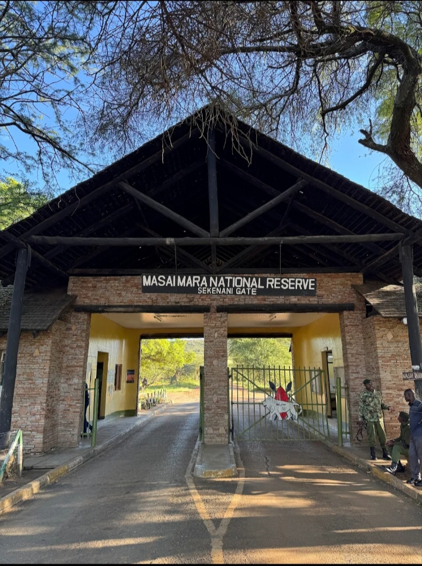
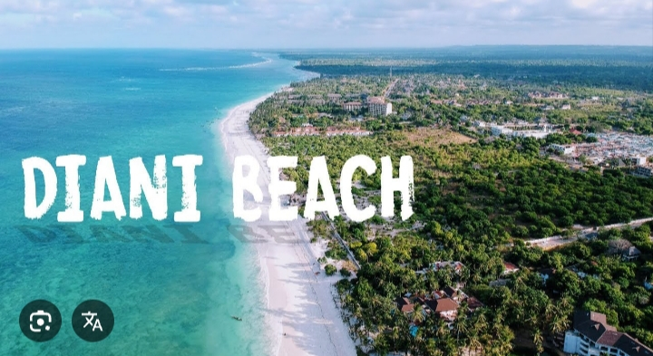
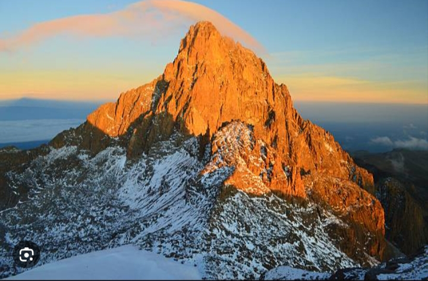

Kenya has many beautiful tourist destinations that attract visitors from all over the world. These places offer wildlife,beaches and scenic landscapes.
It is famous for wildlife such as lions,elephants and the great migration of wild beast

It is known for its white sand and clear blue water. It is perfect for relaxation and water sports.

Mount Kenya is the highest mountain in Kenya and is popular for hiking and adventure.

| Place | Location | Main Attractions |
|---|---|---|
| Maasai Mara | Narok | Wildlife |
| Diani Beach | Kwale | Beach |
| Mount Kenya | Central Kenya | Hiking |